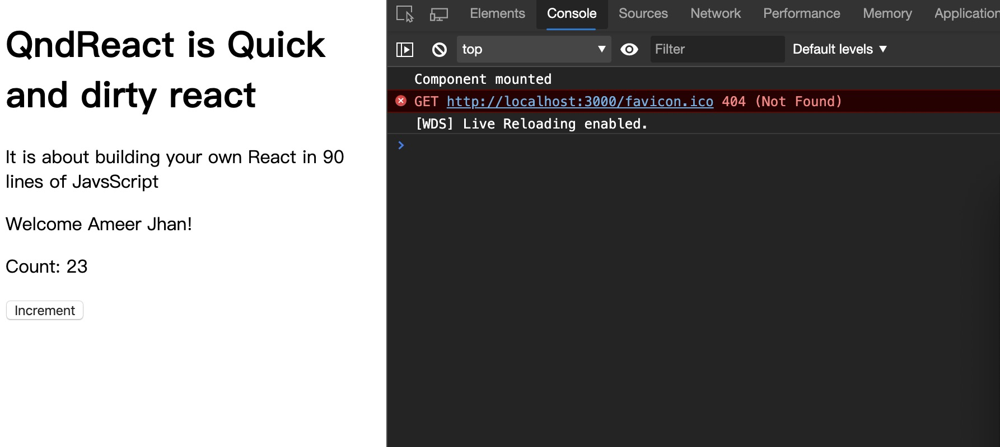

Go to Github Home Page 从零开始构建一个react是很复杂的，但是借助现有的一些组件，快速实现react库的主要功能，则并不那么难。 我们构建的react库应当包含如下元素： JSX 函数组件 类组件 生命周期钩子函数 依赖的部件我们不会从零开始，可以使用 snabbdom 实现虚拟DOM的功能，使用 @babel/plugin-transform-react-jsx 插件对jsx进行转译。 @babel/plugin-transform-react-jsx首先需要了解 @babel/plugin-transform-react-jsx 插件到底做了什么。 123456const App = ( <div> <h1 className="primary">QndReact is Quick and dirty react</h1> <p>It is about building your own React in 90 lines of JavsScript</p> </div>); 上面的 jsx 被转换成下面这样： 12345678910111213141516var App = React.createElement( "div", null, React.createElement( "h1", { className: "primary" }, "QndReact is Quick and dirty react" ), React.createElement( "p", null, "It is about building your own React in 90 lines of JavsScript" )); snabbdomsnabbdom 是虚拟DOM的一种实现。 https://github.com/snabbdom/snabbdom 先让react运行起来先忽略各种技术的细节，clone 如下仓库，先让项目运行起来。 https://github.com/iDo-0791/webpack-starter-pack 运行效果如下：  开始构建过程基本的组件底层的支撑函数什么是什么是 下一篇→ To show LiveRe comment, please use JavaScript 目录 1. 依赖的部件1.1. @babel/plugin-transform-react-jsx1.2. snabbdom2. 先让react运行起来3. 开始构建过程3.1. 基本的组件3.2. 底层的支撑函数3.2.1. 什么是3.2.2. 什么是